![Minimum bipartition negativity per fixture for the multipartite and higher-dimensional entanglement witness suite. Bars encode the smallest single-subsystem-versus-rest negativity for each GHZ, W, and qutrit fixture, colored to separate entangled fixtures that are detected on every cut from the separable product false-positive controls that must stay at zero negativity; the legend maps the two colors and the figure is a finite PPT/negativity witness over fixed states, not a genuine-multipartite-entanglement certificate and not empirical, neural, or physical qFEP evidence.](../figures/multipartite_witness_negativity.png)
This supplement collects the load-bearing software audits and governance surfaces kept out of the main argument, grouped so readers can distinguish model behavior from manuscript accountability. It opens with the symbol and variable glossary (@sec:supplement-symbol-glossary). The finite engine audits follow: the quantum and contextuality engines (@sec:supplement-finite-quantum-contextuality-audits), the seeded criticality signatures (@sec:supplement-criticality-indicators), and the compassion policy-scope proxy (@sec:supplement-compassion-scope). The source-role ledger then explains how scholarship is allowed to support vocabulary without raising evidence ceilings (@sec:supplement-source-role-scholarship). The practice-interface material follows, with bounded model interventions (@sec:supplement-bounded-practice-protocols) and an optional contemplative-inquiry reading scaffold (@sec:supplement-contemplative-inquiry). The final section, @sec:supplement-meta-manuscript-record, gathers reproducibility commands, claim and evidence gates, figure source maps, release and review-response ledgers, visual audits, dashboard checks, and supplemental limitations in one meta-manuscript record.
This glossary is the single structured home for every symbol that appears in the equation registry and in the displayed surrogate equations of @sec:methods-roadmap-quantum-engines. Each row gives the symbol, its natural-language name, and a short description of what it denotes in the finite software surrogate. Where the source paper and the active-inference literature reuse the same letter for two different quantities, the disambiguation note records which reading this project uses. The glossary describes notation only; it does not assert any empirical, neural, clinical, or ontological reading of the quantities it names.
These symbols appear in the QRF sectorisation and indistinguishability surrogates (@eq:7, @eq:8, @eq:9).
| Symbol | Name | Description |
|---|---|---|
| \(B\) | Boundary screen | The finite set of boundary channels (the six bits) through which an agent and its environment interact; the substrate the agent predicts across. |
| \(S_Q\) | Sector set | The set of QRF sector labels that a sectorisation can assign to boundary states. |
| \(Q\) | Sectorisation map (QRF) | A quantum reference frame realised as a map \(Q: B \rightarrow S_Q\) from boundary states to sector labels (@eq:7). |
| \(Q_i,\ Q_j\) | Sector labels | Two specific sectors whose observation distributions are compared for indistinguishability (@eq:9). |
| \(o\) | Observation | A boundary readout, i.e. a bit pattern emitted by the screen. |
| \(\bar{o}\) | Coarse-grained observation | A marginal or aggregated observation used in the frame-relative likelihood (@eq:8). |
| \(M\) | Generative model | The agent’s full model over boundary dynamics. |
| \(M_Q\) | Frame-restricted model | The generative model read under a particular sectorisation \(Q\) (@eq:8). |
| \(P(\cdot)\) | Probability | A finite probability distribution over boundary outcomes. |
These symbols appear in the separation-prior and free-energy surrogates (@eq:10, equation 6, and equation 11 of the registry).
| Symbol | Name | Description |
|---|---|---|
| \(\sigma\) | Separation prior | A structural precision and map \(\sigma: Q \rightarrow Q_{\sigma}\) restricting admissible sectorisations to a subspace (@eq:10). Disambiguation: the criticality branching ratio is conventionally also written \(\sigma\); this project reports it as “branching ratio” to keep the separation prior unambiguous. |
| \(Q_{\sigma}\) | Admissible subspace | The restricted set of sectorisations favoured by the separation prior (@eq:10). |
| \(F\) | Variational free energy | The quantity the agent minimises; it decomposes as complexity minus accuracy (registry equation 6). |
| \(\Delta F\) | Free-energy change | The free energy of the reduced model minus the free energy of the full model, i.e. the change when the separation prior is pruned. |
| complexity | Complexity term | The Kullback-Leibler divergence of the posterior from the prior over model parameters (registry equation 11). |
| accuracy | Accuracy term | The expected log-likelihood of observations under the model. |
The profile-specific generative models are built from four arrays. The manuscript names them in words; the conventional single letters are given here for cross-reference only.
| Array (conventional letter) | Name | Description |
|---|---|---|
| likelihood array (\(A\)) | Observation likelihood | Maps hidden states to observation probabilities. |
| transition array (\(B\)) | State transition | Maps a state and selected action to the next state. Disambiguation: \(B\) here is the pymdp transition array, distinct from the boundary screen \(B\) above; the manuscript uses “transition array” in prose. |
| preference array (\(C\)) | Preferences | Encodes the agent’s preferred observations as log-preferences. |
| prior array (\(D\)) | Initial-state prior | The prior over hidden states at the first step. |
These quantities are computed from seeded boundary-channel activity series (see @sec:supplement-criticality-indicators).
| Symbol | Name | Description |
|---|---|---|
| branching ratio | Branching ratio | Estimated descendants per ancestor over a boundary-channel activity series. |
| criticality index | Criticality index | The absolute distance of the measured branching ratio from one, \(\lvert\text{branching ratio} - 1\rvert\). |
| avalanche size | Avalanche size | The length of a maximal supra-threshold run of activity. |
| LLR | Power-law-versus-exponential LLR | A finite log-likelihood-ratio diagnostic comparing power-law and exponential fits to the avalanche-size distribution. |
These appear in the finite quantum and contextuality engines (@sec:supplement-finite-quantum-contextuality-audits).
| Symbol | Name | Description |
|---|---|---|
| \(\rho\) | Density matrix | A finite quantum state on a small Hilbert space. |
| \(S(\rho)\) | Von Neumann entropy | \(-\mathrm{Tr}(\rho \log \rho)\); the reduced entropy quantifies entanglement in the two-qubit sweep. |
| CHSH value | Bell witness | A correlation sum tested against the local bound of two and the Tsirelson bound of \(2\sqrt{2}\). |
| negativity | Entanglement witness | A separability witness derived from the positive-partial-transpose criterion. |
| \(H_U, H_A, H_B, H_{AB}\) | Partition entropies | Joint and marginal Shannon entropies of boundary partitions used in the registry’s first equation. |
Every symbol above denotes a quantity inside a finite, replayable software surrogate. None of these symbols, individually or in combination, is a measurement of a physical, neural, or contemplative quantity, and the evidence ceilings in @sec:supplement-claim-evidence-ceilings govern how any of them may be read.
The technical quantum and contextuality panels are supplemental
because each one strengthens a finite software surrogate without
changing the manuscript’s evidence class. The generated entropy audit
records 33 entanglement-grid rows and 825
basis-invariance rows, while the trajectory-convergence audit reaches
2048 sampled trajectories at its largest convergence point.
They are source-mapped, schema-validated, and caption-audited, but they
do not instantiate a physical qFEP, measure a real observer boundary,
provide human data, or establish contemplative efficacy.
The internal-cut audit in @fig:internal_cut_unmeasurability generalises the no-self-evidence result from the single agent/environment boundary to arbitrary internal boundaries, following Section 3.3. A Bell pair on the agent and an ancilla is tensored with an environment pure state, so the agent’s accessible reduced state is invariant while the environment’s internal-cut entropy differs between a separable and an entangled environment. For every environment bipartition the accessible marginal drift stays near zero, so the agent cannot adjudicate the internal cut from its own side, while a two-sided oracle that is given the full joint state recovers the differing entropy. This is the resolving-power control: the quantity is genuinely non-trivial, yet remains inaccessible from one side. The audit is a finite pure-state linear-algebra computation, not a physical or observer-boundary measurement.
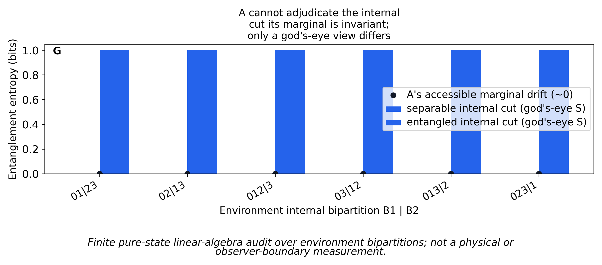
The Markov-blanket discovery audit in @fig:markov_blanket_discovery gives the no-self-evidence thesis a classical statistical form to complement the quantum internal-cut result. A Markov blanket is a conditional-independence structure: the internal variables are independent of the external ones given the blanket [kirchhoff2018blankets; hipolito2021markov]. For a multivariate Gaussian that structure lives exactly in the zero pattern of the precision (inverse-covariance) matrix, whereas the covariance an interior observer can passively measure is generically dense even when the precision is sparse. Over a fixed six-variable precision matrix with a planted internal/blanket/external partition, reading the precision support recovers the blanket exactly, and so does a swept threshold on partial correlations, so the demonstration is a correctness statement about precision versus covariance rather than a method beating a strawman. For this confounded instance no threshold on the marginal correlation matrix recovers the same blanket, because a weak true internal-blanket correlation is masked by a stronger induced internal-external one. That per-instance result is not over-generalised: a perturbation ensemble makes the claim distributional and honest. Across structurally-similar positive-definite perturbations of the planted weights, the precision support recovers the blanket in every instance, while the marginal-correlation threshold recovers it in only a minority (about a third of the sampled instances) and fails in the majority. The boundary is therefore reliably visible in conditional independence but only contingently in the marginal. Three further controls guard the claim: a fully-coupled precision matrix yields no nontrivial separation, an epsilon internal-external coupling breaks the exact conditional independence so the detector no longer reports a clean blanket, and the ensemble’s precision-recovery fraction must strictly exceed its marginal-recovery fraction. The audit is a finite deterministic linear-algebra computation, not a neural, developmental, or empirical claim about any real system’s boundary.
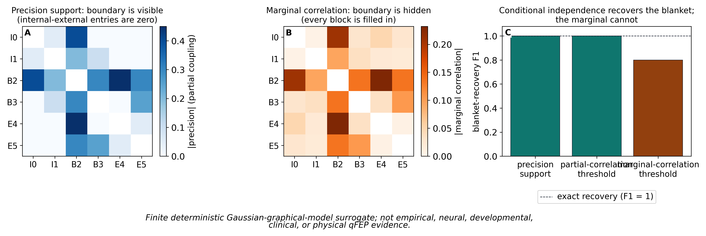
The interaction-information audit sharpens the no-self-evidence statement to its extreme case. Over a categorical joint of internal, blanket, and external variables the interaction information, the conditional minus the marginal mutual information [mcgill1954multivariate; cover2006elements], separates a synergistic boundary from a redundant one. For a deterministic boundary in which the blanket is the parity of internal and external, the marginal mutual information the interior can passively observe is exactly zero, yet conditioning on the blanket reveals a full bit of dependence, so the interaction information is strongly positive. A redundant common-cause screen has the opposite sign, because the blanket renders internal and external conditionally independent, and an independent null sits at zero. The sign of the interaction information therefore flips between regimes that are indistinguishable to a marginal-only reading, a finite and exact echo of the thesis that the boundary cannot be evidenced from inside. The audit is a finite deterministic Shannon-information computation, not a neural, developmental, or empirical claim.
The classical data-processing audit states the boundary’s informational closure as the complement of the quantum data-processing engine. Modelling the boundary as a Markov chain from external world to blanket to interior, the Shannon data-processing inequality bounds the interior’s information about the external world by the blanket’s, with equality if and only if the interior’s read-out of the blanket is a sufficient statistic [cover2006elements]. A sufficient (lossless) read-out saturates the bound, a lossy state-merging read-out strictly loses information, and a constant read-out reaches zero; saturation versus strict loss is the discriminating control, measured from the joint distribution. The interior can therefore never know the external world better than the blanket lets it. The audit is a finite deterministic information-theoretic computation, not a neural, developmental, or empirical claim.
The contextuality-suppression audit operationalizes the Section 6.1 claim that the separation prior suppresses the inherent contextuality of the boundary [kochen1967problem]. The parity-obstruction scenario has no global section, so an unconstrained agent that probes its incompatible contexts exhibits a positive linear-programming residual. A separation-constrained agent that commits to a single fixed sectorisation only ever measures within one context and never collects the obstructing data, so its observed sub-model is feasible and the contextuality is suppressed. The discriminating negative control is the noncontextual scenario, where the suppression delta is zero because there is nothing to suppress. The audit is a finite linear-programming obstruction comparison, not a claim that physical boundaries are contextual or that any agent realized emptiness.
The separability sweep in @fig:quantum_boundary_entropy_landscape records reduced von Neumann entropy, mutual information, CHSH strength, contextual-fraction proxy, and Landauer-scaled lower-bound values for a finite two-qubit family. The product endpoint is the separable control and the Bell endpoint approaches one bit of reduced entropy and the Tsirelson CHSH value.
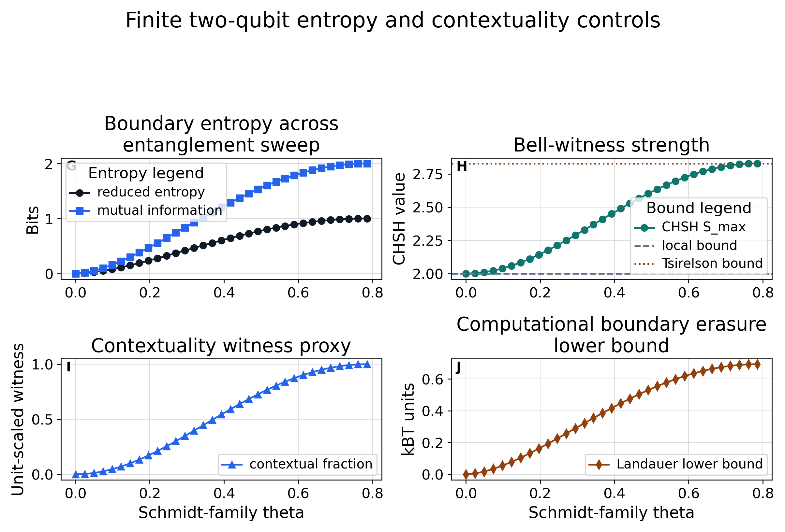
The mixed-state entanglement audit in @fig:arbitrary_two_qubit_entanglement_audit extends the entropy check beyond a pure Schmidt curve. Separable controls remain zero-negativity, Bell controls are positive, Werner-family rows cross the PPT threshold, and invalid density matrices are rejected before witness values become interpretable.
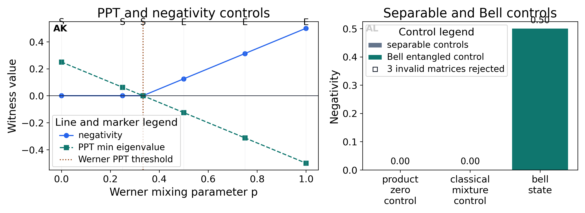
The multipartite and higher-dimensional witness suite extends the same negativity and PPT discipline beyond two qubits. Independent fixtures construct Greenberger-Horne-Zeilinger (GHZ) states [greenberger1989going] on two, three, and four qubits, a three-qubit W state, and a maximally entangled qutrit pair, then evaluate the negativity witness on every single-subsystem-versus-rest bipartition. The entangled fixtures are detected on every cut, with GHZ negativity at one half and the qutrit pair at one, while the explicit false-positive controls, separable product states on the same qubit and qutrit registers, are not detected on any cut. The suite is a finite linear-algebra witness over fixed states recorded in the multipartite witness suite audit artifact; it is not a genuine-multipartite-entanglement certificate and is not empirical, neural, clinical, or physical qFEP evidence.
The tensor-network benchmark decomposes each toy boundary-screen state into a matrix product state by sequential singular-value decomposition [eisert2010area]. The exact decomposition must reconstruct the state (the positive control), the maximum bond dimension records tensor-network tractability beyond exact state-vector enumeration (GHZ and W stay at bond two, products at one, and the GHZ bond stays two as the screen grows), and a bond-one truncation is the discriminating control pair: it loses fidelity on the entangled states but is lossless on the product state. This is a finite exact-MPS benchmark over toy sizes, not a large-scale many-body simulation and not empirical evidence.
![Tensor-network matrix-product-state benchmark shown as two panels. Panel A bars encode the maximum bond dimension per fixture, with entangled GHZ and W states staying at bond two and product states at bond one as the screen grows, demonstrating tractability beyond exact state-vector enumeration; Panel B bars encode the bond-one truncation error, which is positive on entangled fixtures and zero on products, the discriminating control. The figure is a finite exact-MPS benchmark over toy states, not a large-scale many-body simulation and not empirical evidence.](../figures/tensor_network_scaling.png)
The collision-model surrogate relaxes a system qubit toward a fixed ancilla state through repeated partial-SWAP interactions with fresh ancillas, tracing out the ancilla each step. Coupled collisions drive the system trace distance toward zero while the zero-coupling collision is the discriminating control that leaves the system unchanged; every step stays trace-preserving and positive. It is a finite deterministic relaxation surrogate, not a physical heat bath or a thermodynamic measurement, and not empirical evidence.
![Collision-model thermalization surrogate shown as grouped bars of the trace distance from the system qubit to the fixed ancilla, initial versus final, for each coupling strength. The weak and strong partial-SWAP couplings collapse the final distance toward zero while the zero-coupling control leaves the final distance equal to the initial value, the discriminating control; the legend maps the initial and final bars. The figure is a finite deterministic collision surrogate, not a physical heat bath or thermodynamic measurement and not empirical evidence.](../figures/collision_model_relaxation.png)
The data-processing monotonicity surrogate in @fig:data_processing_monotonicity operationalizes the opacification and Bayesian-model-reduction theme of Sections 5.3 and 6.1 as the irreversible loss of distinguishability at a coarse-grained boundary. The Lindblad-Uhlmann data-processing inequality states that a completely-positive trace-preserving channel can only reduce the trace distance and quantum relative entropy between two states [lindblad1976generators; nielsen2010quantum]; over a finite family of qubit state pairs and the phase-damping, amplitude-damping, and depolarizing channels, every after-channel distance lies on or below its before value, so once the environment record is averaged out the interior cannot recover what was forgotten. Two discriminating controls give the audit teeth rather than leaving the inequality true by construction. First, the transpose map is positive and trace-preserving yet its Choi matrix has a minimum eigenvalue of minus one, so it is not completely positive; this control fires and shows that restricting to physical channels is a requirement, not a convenience. Second, a selective record-keeping post-selection, a non-trace-preserving filter chosen as the orthogonaliser, raises the trace distance toward one; this control fires and shows that the irreversibility belongs specifically to the record-discarding average and not to the interaction itself, so keeping the record can sharpen rather than blur. The audit is a finite qubit-channel linear-algebra computation, not a physical qFEP, neural, clinical, or contemplative claim.
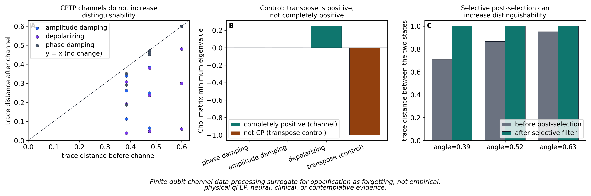
The quantum Cramer-Rao estimation audit operationalises the precision limit on inferring the separation parameter from the boundary. The classical Fisher information of any measurement is bounded by the quantum Fisher information of the state family, computed here from the symmetric logarithmic derivative [braunstein1994statistical; paris2009quantum]; that bound is itself a data-processing inequality for Fisher information. The discriminating control is a coherent-versus-classical contrast. When the separation parameter is encoded coherently, the interior’s decohered pointer-basis measurement strictly loses information relative to the quantum bound while the symmetric-logarithmic-derivative measurement saturates it; when the parameter is encoded classically in populations, the pointer measurement is already optimal and there is no gap. The information gap is therefore created by the coherence that opacification renders inaccessible, not by construction. The audit is a finite deterministic single-qubit estimation-theory computation, not a metrology experiment and not a neural, clinical, or physical qFEP claim.
The Blackwell Bayes-risk audit grounds the manuscript’s recurring “use is licensed, ontology is not” reading in statistical decision theory. A boundary observation channel defines a decision problem whose Bayes risk, the expected loss of the optimal decision rule, measures the channel’s decision value. By Blackwell’s theorem an invertible relabeling of the boundary outcomes, the decision-theoretic image of an admissible QRF sector relabel, is a reversible post-processing and preserves the Bayes risk exactly, so deciding is just as good under any admissible relabeling and use of the boundary is licensed [blackwell1953equivalent]. A genuine garbling, a lossy and irreversible post-processing standing for the collapse of the boundary into an ontology, can only raise the Bayes risk, and a nontrivial one strictly does; over a dense grid of garblings no post-processing ever lowers it, and a complete erasure reaches the prior chance risk. Relabel-preserves versus garble-degrades is the measured ordering. The audit is a finite deterministic statistical-decision computation, not a neural, clinical, or physical qFEP claim.
The no-signaling scenario library audits finite probability tables for no-signaling, that is, that each party’s marginal is independent of the other party’s setting. The quantum CHSH-Bell and product scenarios satisfy it; a deliberately disturbing table that injects a setting-dependent marginal is the discriminating negative control and is correctly flagged as signaling. This is a finite no-signaling and no-disturbance audit over a software scenario library, not a contextuality proof and not empirical evidence.
The n-cycle contextuality library generalizes the CHSH and triangle scenarios to a parameterized family of compatibility cycles [araujo2013ncycle]. For each cycle length the same deterministic-assignment linear program tests whether a behavior lies in the noncontextual polytope, applied to perfect anti-correlation, the n-cycle quantum correlation at minus cosine pi over n, and an uncorrelated control. The discriminating signal is the odd-versus-even dichotomy cross-checked against graph two-colorability: odd cycles, including the five-cycle pentagon, are not two-colorable, so their frustrated behaviors have no noncontextual model and the program is infeasible, while even cycles stay feasible and the uncorrelated control is always feasible. Every verdict is measured linear-program feasibility cross-checked against two-colorability rather than an asserted optimal quantum violation, so the audit is a finite contextuality-structure library and not empirical evidence.
![n-cycle contextuality scenario library shown as a feasibility matrix. Rows are cycle lengths labeled odd or even and two-colorable or frustrated, columns are the perfect anti-correlation, quantum, and uncorrelated behaviors, and each colored cell encodes whether the noncontextual-polytope linear program is feasible (a noncontextual model exists) or infeasible (contextual). Odd cycles including the five-cycle pentagon are contextual while even cycles are not, cross-checked against graph two-colorability; the matrix records measured LP feasibility, not an asserted optimal violation, and is not empirical evidence.](../figures/n_cycle_contextuality_panel.png)
The contextuality witness in @fig:quantum_contextuality_witness separates CHSH strength from basis-sweep entropy behavior. The figure supports only a finite CHSH witness and local-basis invariance control; it is not a general QRF contextuality proof.
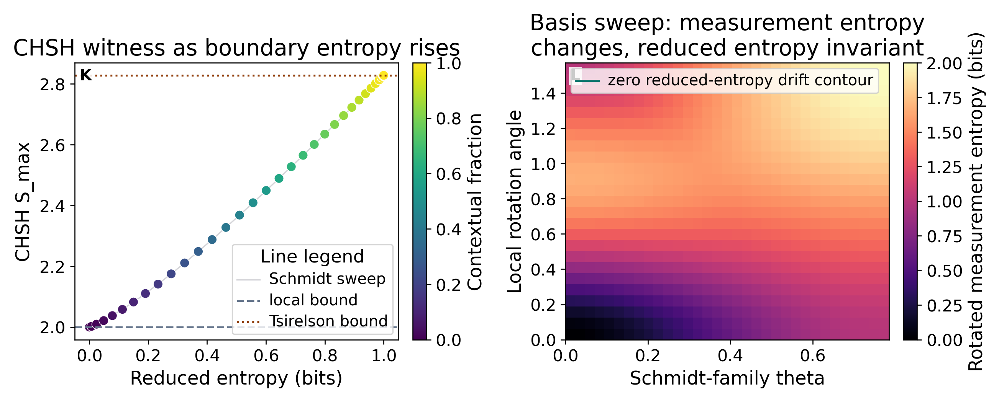
The CHSH measurement-cover table in @fig:quantum_measurement_contextuality_table records context-by-outcome probabilities, no-signaling checks, product-control locality, and Bell-state Tsirelson behavior. The companion local-polytope audit in @fig:quantum_local_polytope_audit solves the finite feasibility problem over deterministic assignments, following the Fine joint-distribution criterion for the Bell inequalities [fine1982hidden], so the Bell table’s contextuality is visible as local-polytope infeasibility rather than a decorative label. A separate independent cross-check rederives CHSH, Tsirelson, product locality, and local-polytope feasibility without calling the original quantum helper functions, and its perturbed expected-value control must fail before the claim is accepted.
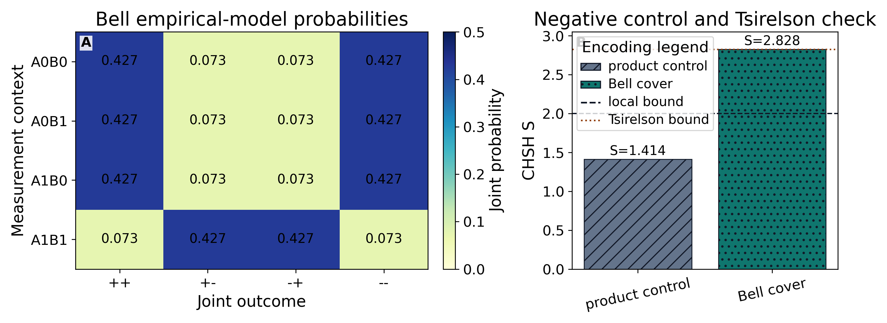
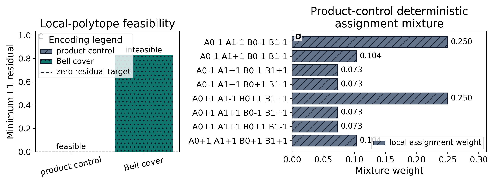
The generic measurement-cover polytope audit in @fig:general_measurement_cover_polytope_audit repeats the deterministic-assignment LP over triangle, parity, CHSH-product, and CHSH-Bell scenarios. It turns the CHSH example into reusable finite obstruction machinery while remaining scenario-local and non-empirical.
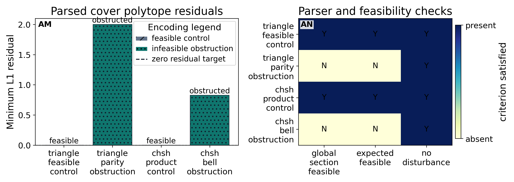
The dephasing-channel panel in @fig:quantum_open_system_dynamics checks trace preservation, positivity, entropy production, mutual-information contraction, and CHSH decay for a finite two-qubit channel. It validates a channel-control surface, not the source paper’s full open-system qFEP dynamics.
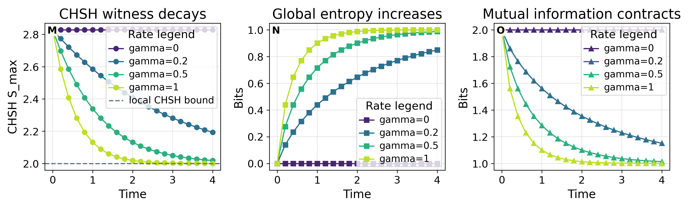
The quantum-trajectory unraveling in @fig:quantum_trajectory_unraveling samples jump/no-jump paths and reconstructs finite Lindblad densities using seeded Monte Carlo wave-function trajectories [dalibard1992wavefunction; molmer1993montecarlo; wiseman2010quantum]. The convergence audit in @fig:quantum_trajectory_convergence varies trajectory count, compares against exact Lindblad evolution, and requires a too-few-trajectory negative control to fail [plenio1998quantumjump].
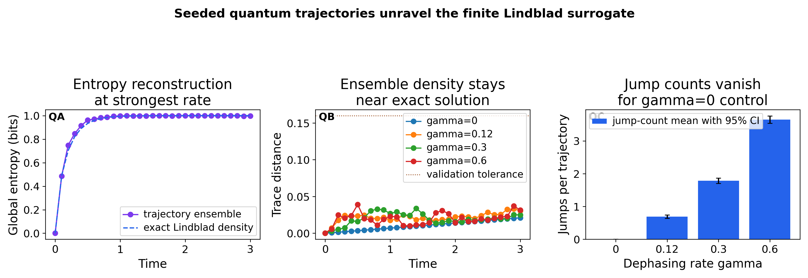
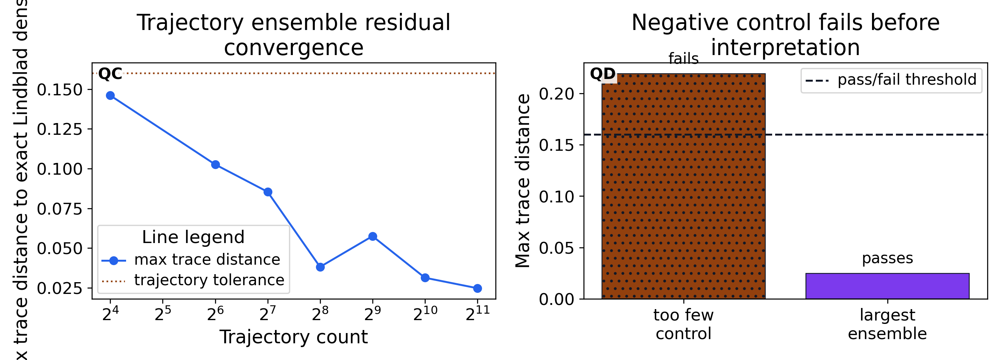
The thermodynamic channel-cost audit in @fig:thermodynamic_channel_cost_audit separates finite entropy accounting from thermodynamic overclaim. Declared channels must be CPTP, non-CPTP controls are rejected, and Landauer lower bounds are reported only as kBT-scale software quantities.
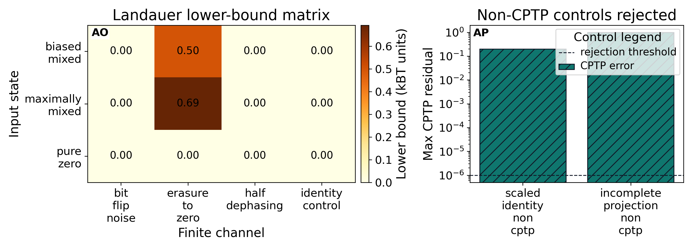
The boundary-Hamiltonian Lindblad engine in @fig:qfep_boundary_hamiltonian_dynamics is an implemented finite qFEP extension surrogate with trace, positivity, entropy, mutual-information, and malformed-dynamics controls. It gives a deterministic open-system test bed without licensing physical qFEP realization.
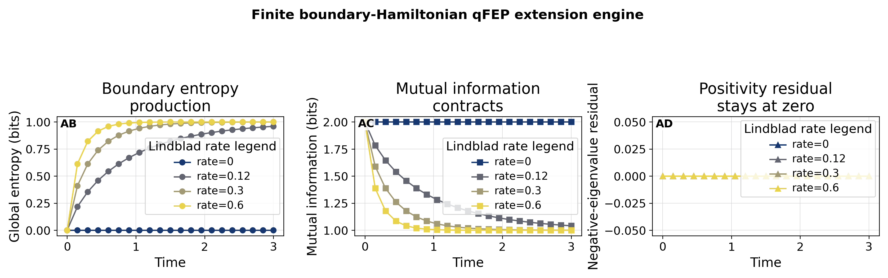
The many-body screen panels in @fig:many_body_boundary_screen_sweep and @fig:sparse_boundary_screen_scaling_audit test cut sensitivity, separable controls, random-cut non-evidence controls, and sparse exact scaling. These figures are many-body software diagnostics, not proof that a real observer boundary has been found.
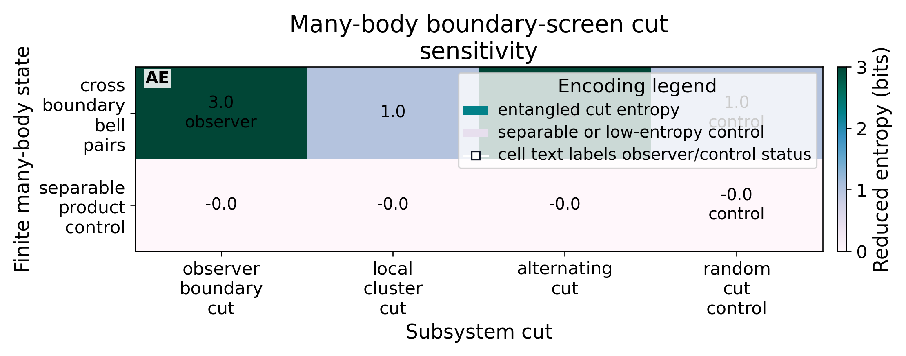
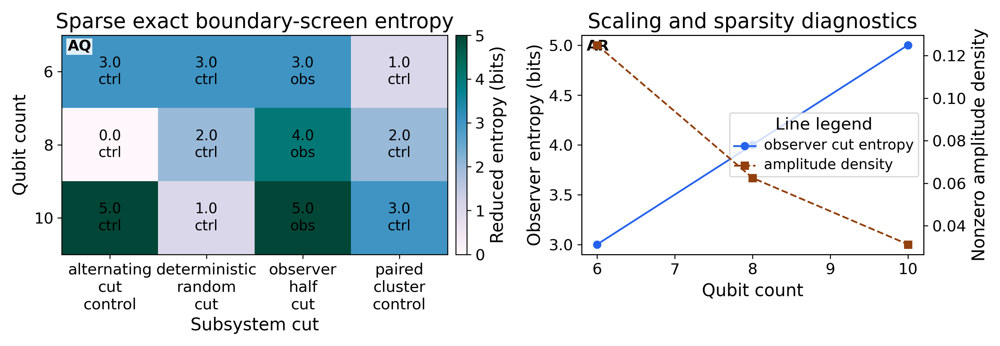
The sheaf-contextuality audit in @fig:sheaf_contextuality_obstruction_audit distinguishes feasible global-section controls from an obstruction case, while the QRF relabeling and frame-covariance audits in @fig:qrf_transformation_covariance_audit and @fig:qrf_frame_covariance_toy_audit check admissible probability-preserving maps, spectra, reduced entropies, and invalid transform rejection. These are finite covariance and obstruction checks, not full quantum-reference-frame physics [bartlett2007reference].
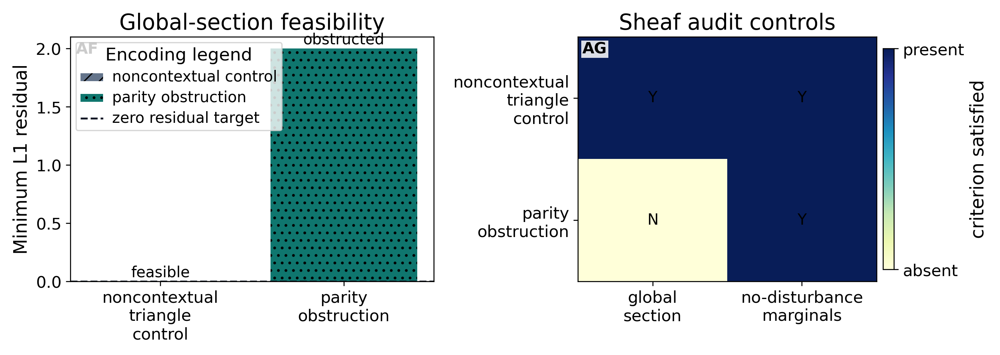
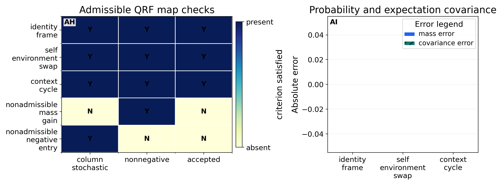
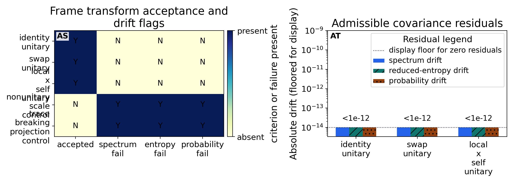
The empirical adapter in @fig:empirical_adapter_provenance_audit remains fail-closed: synthetic fixtures can be software demos only, unsourced human data are blocked, and preregistered placeholders without preprocessing provenance cannot support empirical claims. The roadmap readiness matrix in @fig:quantum_roadmap_readiness_matrix records which finite engines are implemented and which external-evidence classes remain blocked.
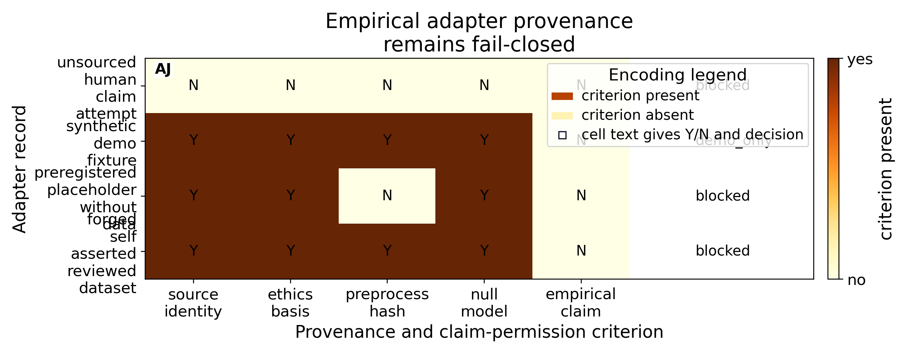
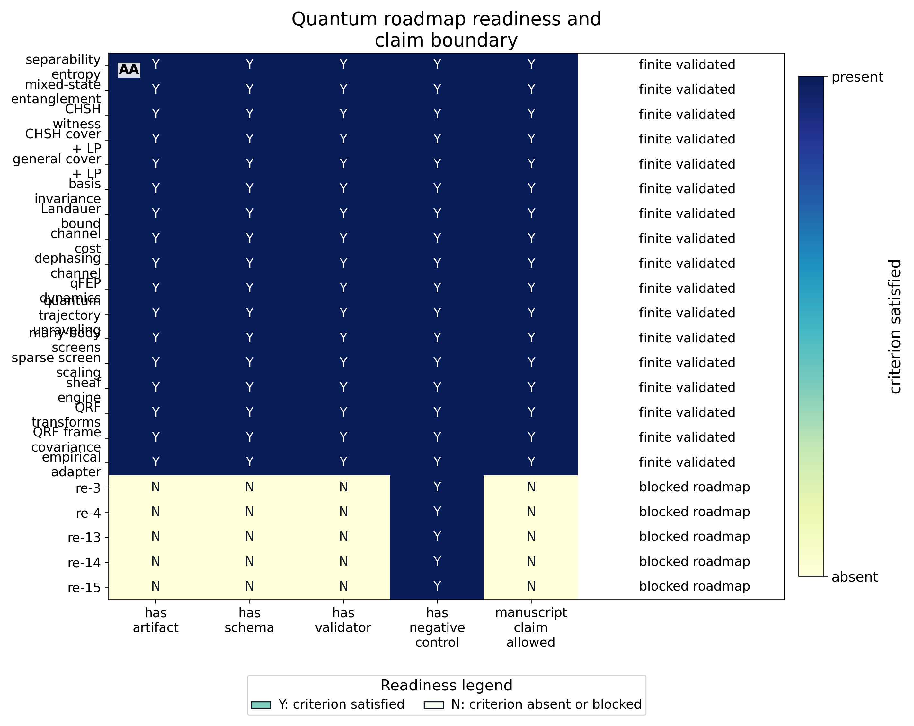
The criticality layer computes the two finite signatures the source paper names for its empirical criticality prediction, rather than a hand-tuned score, over seeded boundary-channel activity series drawn from the active-inference trajectories. A branching ratio is estimated as descendants per ancestor over each activity series, and an avalanche-size distribution is extracted from maximal supra-threshold runs of that activity and summarised by a finite power-law-versus-exponential log-likelihood-ratio diagnostic [beggs2003neuronal]. The derived criticality index is the absolute distance of the measured branching ratio from one, so the keep-or-critical reading follows the measurement rather than a constant; the caution is that these signatures are not dispositive even in empirical neuroscience without stronger controls [touboul2017power_law_absence_criticality; destexhe2021criticality_evidence].
The engine carries both kinds of control. The discriminating negative control is a per-series shuffle: the measured branching ratio must separate each profile ensemble from its shuffled null by disjoint ninety-five percent confidence intervals, not merely by a mean difference, so a separation that survives reflects the temporal structure of the activity beyond sampling noise rather than its marginal rate. A profile whose real and null intervals overlap is not credited, and the criticality reading is reported only when most profiles separate from their null on at least one signature. The positive control is a planted-branching calibration: a pure geometric activity series with a known branching ratio is fed to the estimator, which must recover the planted value within tolerance. Without the calibration the measured branching number would be of unknown meaning; with it, the estimator is shown to measure branching rather than emit an artifact. The seeded stochastic ensemble adds replayable variability and confidence intervals, and the effect-size forest reports profile-minus-null differences with bootstrap intervals and Holm-adjusted permutation tests.
These signatures structure the shape of a future empirical test; they are not neural measurements, clinical outcomes, or evidence that any contemplative practice produced a critical regime.
The reported criticality-style outputs are seeded stochastic simulation indicators computed from the active-inference trajectories: observation entropy, action entropy, switching rate, variance, autocorrelation, null-control contrasts, and confidence intervals over replayable seeds. The single-trace diagnostic remains as a compact continuity check, but @fig:criticality_stochastic_ensemble carries the claim-bearing result because it exposes variability and null controls.
@fig:criticality_signatures shows that the measured branching ratio separates the profile ensembles from their shuffled null controls by disjoint ninety-five percent confidence intervals, which is the finite software analogue of a criticality signature and not a measurement of neural avalanches or branching in any nervous system. The avalanche-size power-law-versus-exponential log-likelihood ratio is reported for continuity only and is non-discriminating on a single trace, where a sample size of one leaves the power-law and exponential fits statistically indistinguishable; it is the branching-ratio separation against the shuffled null, not the single-trace avalanche fit, that carries the criticality reading. The surrogate fixes the shape of a future empirical test; it does not observe criticality.
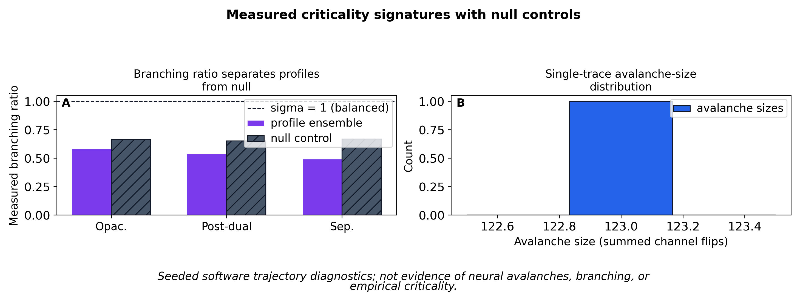
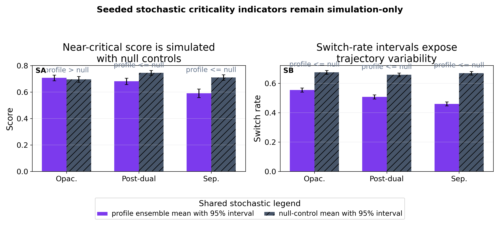
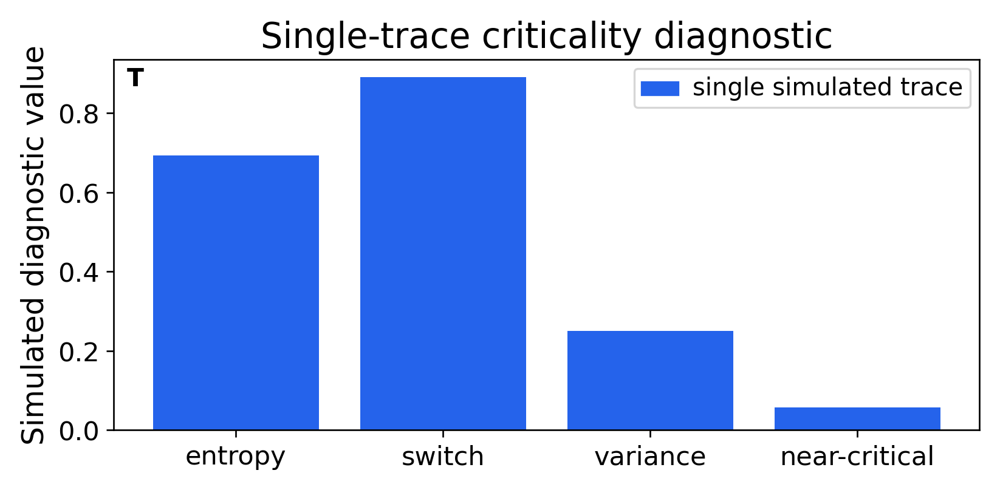
The effect-size forest adds the adversarial statistical view. For each profile and trajectory metric, the audit reports the profile-minus-null mean difference, bootstrap interval, permutation p-value, Holm-adjusted p-value, and Cliff’s-delta direction [westfall1993resampling]. The point of the forest is not significance hunting; it shows which finite stochastic separations are large enough to survive the declared null comparison and which should be treated as weak or unstable simulation behavior.

The compassion-scope engine operationalises the source paper’s
section 6.2 claim that an enforced separation prior preferentially
scopes free-energy minimisation to the self partition. Concern per
boundary channel is computed as
(1 + realised action-influence) * precision_weight, which
blends the realised action-influence of the shared bitstream with the
separation prior’s precision allocation to that channel. The
action-influence is measured per channel as the fraction of baseline
prediction error removed when the selected action is conditioned on,
over a finite boundary stream in which each channel tracks the action
with a declared controllability faithful to the b0-b5 roles (the
body-controllability and action-contingency cues are strongly
action-driven, the distal-world cue least). On this corpus the measured
per-channel influence ranges from near zero on the least
action-contingent channel to its largest value on the most
action-contingent channel, so the term genuinely shapes concern rather
than scaling it uniformly: holding the precision fixed and removing the
influence term measurably shifts the scope asymmetries. Because a raw
scope summed over a partition is confounded by how many channels each
partition contains, concern is normalised per channel as a mean rather
than a sum, so the reported self versus non-self contrast reflects the
mechanism and not the partition sizes. The engine reports the
scope-asymmetry between non-self and self concern per profile.
The discriminating negative control is a precision ablation rather than a label shuffle. A size-preserving label shuffle cannot falsify a quantity whose self and non-self split is governed by partition size and prior precision, so it would pass by construction; ablating the separation prior’s self-precision boost instead collapses the constrained profile’s self-concentration and shrinks the overall spread, which isolates the separation prior as the cause of the modeled self-privileging. The ablation preserves the channels and their activity and removes only the precision boost, so a change under ablation is attributable to that prior. The action-influence term carries its own discriminating controls: it tracks the per-channel controllability, it falls to near zero on a stream with no action-contingency, and it collapses when an action shuffle permutes the actions against the observations and destroys the realised influence, so the blend’s bitstream half is measured and falsifiable rather than asserted.
The proxy is defined as widening the field of modeled error without privileging a self sector, and the artifact reports this as a policy-scope quantity, not a moral or clinical endpoint. As shown in @fig:compassion_scope_widening, the scope-asymmetry is negative under the separation-constrained profile, where concern concentrates on the self partition, and rises toward zero under the opacified and post-dual profiles, where concern widens to non-self channels. The precision-ablation control collapses the constrained profile’s self-concentration and shrinks the overall spread, confirming that the modeled self-privileging tracks the separation prior rather than the partition sizes. This is a finite policy-scope surrogate; it is not a measure of compassion, well-being, practice efficacy, or any affective, moral, or clinical outcome.
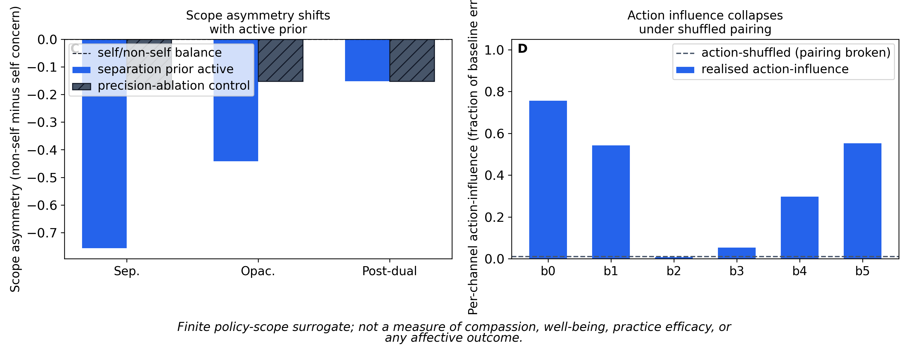
The scholarship layer is an executable source-role matrix, not a
decorative bibliography.
data/sources/scholarship_manifest.yaml records the primary
preprint, qFEP foundations [fields2022qfep; fields2023quantumframe], QRF
and boundary background [giacomini2019qrf;
chen2026quantumreferencefields; vanrietvelde2020perspective;
bartlett2007reference; rovelli1996relational; kirchhoff2018blankets;
hipolito2021markov], finite quantum-information, decoherence,
contextuality, open-system, and trajectory references
[nielsen2010quantum; vedral2002relative; bell1964epr; clauser1969chsh;
spekkens2005contextuality; abramsky2011sheaf; zurek2003decoherence;
landauer1961irreversibility; lindblad1976generators;
gorini1976completelypositive; dalibard1992wavefunction;
molmer1993montecarlo; wiseman2010quantum], self-evidencing and FEP
background with critique and qualified response [hohwy2016self;
hohwy2026selfevidencingagent; friston2023fep_simpler;
possati2025markovblanketdensity; beck2025dynamicmarkovblanket;
aguilera2021particular; biehl2021technical_fep;
heins2022sparse_coupling; bruineberg2022emperor], active-inference,
expected-free-energy, habit, and Bayesian model reduction methods
[friston2010free; friston2015epistemic; friston2016active;
dacosta2020discrete; parr2022active; friston2011posthoc], the
pymdp implementation anchor [heins2022pymdp], metacognitive
and contemplative-cognition context [sandvedsmith2021mentalaction;
limanowski2018seeing; lutz2015matrix; laukkonen2021many;
laukkonen2025contemplativeai; dahl2015self; tal2026advancedmeditation;
prest2026lettinggo; prest2026selfingwithoutself], criticality context
and false-positive cautions [cocchi2017criticality; shew2013criticality;
wilting2019criticality; touboul2017power_law_absence_criticality;
destexhe2021criticality_evidence], care/compassion context
[doctor2022care; strauss2016compassion_measurement;
singer2014empathy_compassion], and Buddhist, enactive, and
phenomenological terminology boundaries [siderits2013middle;
westerhoff2009madhyamaka; garfield1995fundamental; varela1991embodied;
zahavi2005subjectivity_selfhood].
The scholarship ledger separates primary-target recapitulation from
background theory, software implementation, simulated proxy context,
terminology, and limitations. This matters because a source can justify
vocabulary without licensing a stronger claim. Quantum-information,
Bell, CHSH, contextuality, decoherence, open-system, Monte Carlo
wave-function, quantum-measurement/control, and Landauer sources support
only the finite entropy, witness, measurement-cover, local-polytope,
channel, trajectory, and roadmap vocabulary; QRF, relational, and
perspective-neutral frame sources support transformation or
observer-relative vocabulary without making the finite relabeling screen
a full QRF theory; criticality sources support only future
empirical-adapter vocabulary; contemplative-cognition sources support
only the modeling interface and limitation language; discrete
active-inference and pymdp sources support the
active-inference loop; Markov-blanket sources support boundary-formalism
context; and the primary paper remains the target for the
qFEP/QRF/no-self-evidence formal recapitulation.
The boundary critique is intentionally double-sided. Markov blankets can remain useful as epistemic tools for model factorization, but Bruineberg et al.’s Pearl/Friston distinction blocks the move from formal blanket use to metaphysical boundary discovery [bruineberg2022emperor]. Relational quantum mechanics and enactive neurophenomenology similarly motivate relational and enacted-interface language while withholding proof that this artifact has simulated a physical observer boundary or a literal quantum reference frame [rovelli1996relational; varela1991embodied]. The contemplative sources add another distinction rather than a result claim: organismic self-evidencing, precision reweighting, letting-go models, and identified-with self language are conceptual context for reading profile labels, not evidence that the model induces or measures contemplative attainment [hohwy2026selfevidencingagent; tal2026advancedmeditation; prest2026lettinggo; prest2026selfingwithoutself].
Each source row declares what kind of support it can provide.
Discrete active-inference sources support the
A/B/C/D,
expected-free-energy, and policy-selection machinery; Markov-blanket
sources support boundary vocabulary only when paired with critiques and
qualified responses that keep boundary ontology assumption-sensitive;
QRF and relational sources support transformation, perspective, and
observer-relative language without making the finite relabeling screen a
full quantum-reference-frame theory; quantum-information, Bell/CHSH,
contextuality, quantum-operation, GKSL/Lindblad, and Monte Carlo
wave-function sources support finite entropy, witness,
measurement-cover, local-polytope, channel-cost, dephasing, and
trajectory-unraveling controls but not the full source-paper qFEP
argument [spekkens2016quasi]. Criticality sources support proxy and
future-adapter vocabulary while explicitly warning that scaling
signatures can mislead. Contemplative sources support model-interface
language and selfing distinctions. None of these rows upgrades the
finite surrogate into empirical, clinical, neural, full qFEP, or
practice-outcome evidence.
The ledger is deliberately claim-first rather than bibliography-first. A citation can enter the manuscript only through a scoped role, a track, and one or more local claim IDs [munafo2017manifesto]. This prevents a common failure mode in interdisciplinary work: importing a strong source from one domain, then allowing its authority to leak into another. Here, a quantum-trajectory citation can justify the stochastic unraveling algorithm; it cannot make the trajectory a physical qFEP realization. A contemplative-cognition citation can justify interface vocabulary; it cannot make the protocol an efficacy claim [garfield1995fundamental].
The companion claim-support audit binds those source roles to public claim IDs, required artifacts, and evidence ceilings, checking source roles claim by claim rather than counting references globally: a public claim can pass only when it has a gate, an artifact, scoped support, and an evidence ceiling. These matrices are governance surfaces, not authority for stronger claims, and their full visual audit panels are rendered with the supplemental figure source maps in @sec:supplement-visualization.
Practice protocols are model interventions only. They map attentional opacification, dependent-origination inquiry, and compassion alignment to changes in metacognitive access, prior precision, and QRF policy selection [sandvedsmith2024metacognitive; lutz2008attention]. The bounded model-intervention deltas behind these protocols are rendered as a software-interface specification in @sec:discussion-practice-interface-boundaries, where each protocol’s safety boundary is printed on the figure; nothing here is therapeutic advice, a claim of realization, a moral prescription, or a clinical protocol, and the practice layer stays outcome-independent unless reviewed evidence and ethics constraints are added.
This section adapts the source paper’s “contemplative inquiry as progressive opacification” into a reader-facing interpretation scaffold for the software artifacts. Opacification means making an organizing channel visible as a channel: a boundary, prior, label, or proxy that had been read through becomes available to inspect. The section offers concepts, prompts, and slogans for reading the figures and ledgers; it is not a procedure, therapy, moral instruction, practice prescription, or claim that any prompt produces a cognitive, contemplative, clinical, neural, experiential, or developmental result. It inherits the practice-layer rule in @sec:supplement-bounded-practice-protocols: user-facing language remains safety-bounded and outcome-independent unless separate evidence and ethics constraints are added.
The added contemplative-phenomenology sources make this section narrower, not more prescriptive. They help distinguish self-evidencing organismic function from identified-with self language, and precision reweighting from any claim of realized insight [hohwy2026selfevidencingagent; tal2026advancedmeditation; prest2026lettinggo; prest2026selfingwithoutself]. The reading scaffold therefore treats “self”, “body”, “action”, “other”, and “care” as labels over a finite file, not as diagnoses of experience, instructions for meditation, or evidence that a practice changes a person.
The ladder is a way to read the model states, not a path a person is asked to follow.
These associations name software objects and how to read them. They do not describe, predict, or prescribe any human outcome.
Each prompt is an invitation to inspect a software artifact; none asserts that holding the question yields any insight, change, or experience.
Separation-constrained. Which line is being read as given, and where did the model draw it? What is the separation prior doing for this frame? Which of the six channels is being looked through rather than looked at?
Opacified. When a channel shifts from background to inspectable, what had it been carrying? Reading action, other, and care side by side, what does the model now count that it previously absorbed into “self” or “world”? Did the recorded stream change, or did the frame of inspection change?
Post-dual. With no privileged self/world cut on the screen, what is still organizing the file? Reading indistinguishability directly, what does the data decide and what does it leave open? If the same bits admit several frames, which frame is still being treated as the default?
Aphorisms for reflection only; each names the no-self-evidence logic and claims no effect.
This is optional scaffolding for inspecting artifacts in a chosen order. It is not a procedure, a practice with intended results, a therapy, or a moral instruction, and it claims no effect of any kind; a reader may stop, reorder, or ignore any item. The opacification arc gives one possible reading order, not a path.
The three bounded practice protocols can be mapped onto this order only as labeled reading lenses, with the same ceiling: attentional opacification alongside item 2, dependent-origination inquiry alongside item 3, and compassion alignment alongside item 5. The bounded model-intervention deltas behind them are rendered in @fig:practice_policy_scope_map. Each lens is a way of organizing inspection of the software, with no claimed outcome, and nothing in this section should be read as evidence of realization, clinical benefit, neural change, contemplative attainment, or practice efficacy.
This final supplement section is the meta-manuscript record. It collects the reproducibility commands, validation gates, claim ceilings, source-map audits, local release ledgers, review-response hardening, dashboard checks, and supplemental limits that make the paper inspectable without enlarging the main evidential claim. These checks are manuscript and software accountability surfaces. They are not empirical data, clinical evidence, neural measurement, contemplative-attainment evidence, or physical qFEP realization.
The local chain runs formalism generation, boundary-agent simulation,
BMR sweeps, sensitivity sweeps, criticality and practice maps, figure
generation, sheaf composition, dashboard and review-response hardening,
variable hydration, post-hydration hash refresh, and output validation
in a fixed order. The validation report records 428 passing
output checks across 428 total checks after the latest
full-chain run.
The gates are fail-closed and cover the full surface, one family per check:
data/sources/source_manifest.yaml is verified against
SHA-256
94e2335c3a4a37b8d49039b11b45ccda25bad65d4b80aa15428b84abfba699ac.The public claim IDs checked by the manuscript audit are source_boundary_unevidenceable; separation_prior_sigma; bmr_prunes_sigma; practice_protocol_boundary; qfep_surrogate_scope; quantum_separability_entropy; quantum_contextuality_witness; quantum_measurement_contextuality; quantum_open_system_dephasing; pymdp_runtime_canary; criticality_proxy_boundary; compassion_proxy_boundary; self_evidencing_boundary; metacognitive_access_model; and artifact_release_readiness.
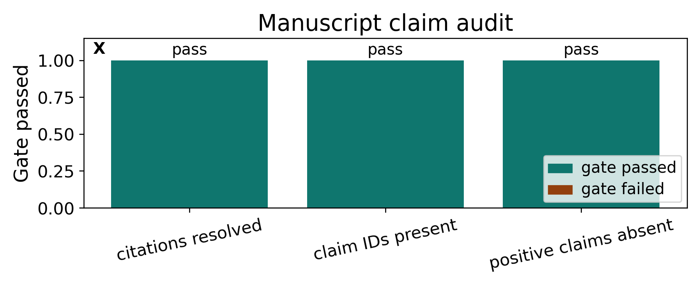
Public claims are treated as typed interface objects rather than free prose. Each claim ID has a reader-facing sentence, a paper locator when the claim recapitulates Sandved-Smith et al.’s source argument, a source-role rationale, an artifact, a validation gate, an evidence class, an allowed interpretation, a prohibited inference, a future-evidence boundary, manuscript-section bindings, and figure bindings. The claim-context ledger is generated from the source crosswalk, scholarship manifest, claim-support audit, evidence-ceiling audit, and source-argument coverage audit; it therefore checks whether a claim is readable in the paper, whether its support source has the correct role, and whether the validation gate is actually resolved.
Evidence ceilings are encoded in the crosswalk because limitations should not depend on a reader noticing a prose caveat. Each claim row names a prohibited inference, a future evidence requirement, and one or more boundary stressors. The stressors cover surrogate scope, empirical gaps, runtime dependencies, source-role limits, practice boundaries, quantum gaps, neural-measurement boundaries, and normative boundaries. No citation count upgrades an evidence class: source support licenses a vocabulary or method context, while the artifact gate checks only the finite software behavior declared for that class.
The claim-context evidence ladder makes the public claim surface readable, and the evidence-ceiling stress matrix is its adversarial companion: it marks which stronger readings remain disallowed even when a figure, source row, or validation gate passes. In @fig:claim_context_evidence_ladder the bar length reports scoped source-role count, the gate marker reports whether the validation gate resolves, and the blocked marker records the stronger reading that remains prohibited. A longer bar therefore means broader source-role context, not a higher evidence class.
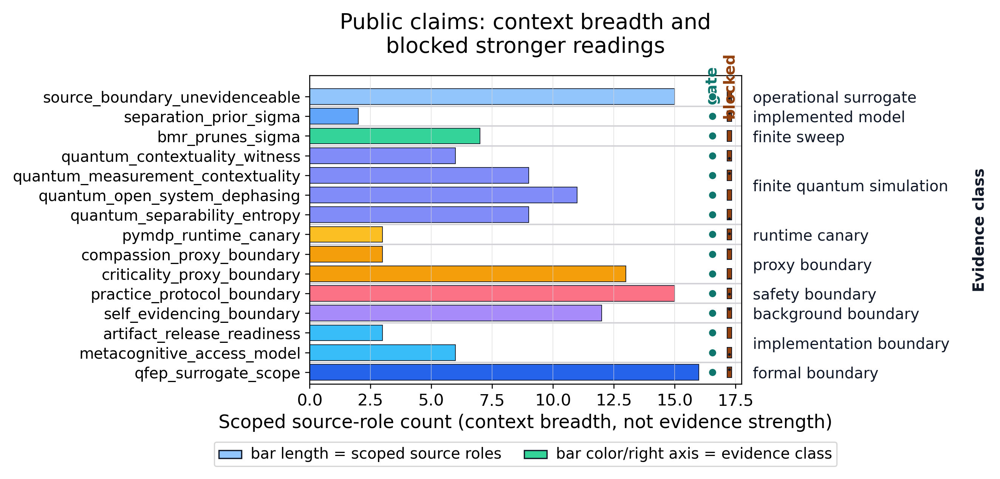
The stress matrix then separates apparently similar claims by failure mode. The QRF and sigma rows are source-role and surrogate-bound because they recapitulate a formal no-self-evidence argument over finite boundary channels. The BMR row is software-comparison bounded because pruning follows from the declared grid, not from human contemplative data. The pymdp runtime row is dependency-bound because it asserts a pinned implementation surface. The quantum rows are quantum-method bounded because they check finite density matrices, contextuality covers, channels, and trajectories without becoming a physical qFEP realization. The criticality, compassion, and practice rows are proxy or safety bounded because their local artifacts are modeled interfaces and stochastic indicators, not empirical measurements or efficacy evidence.
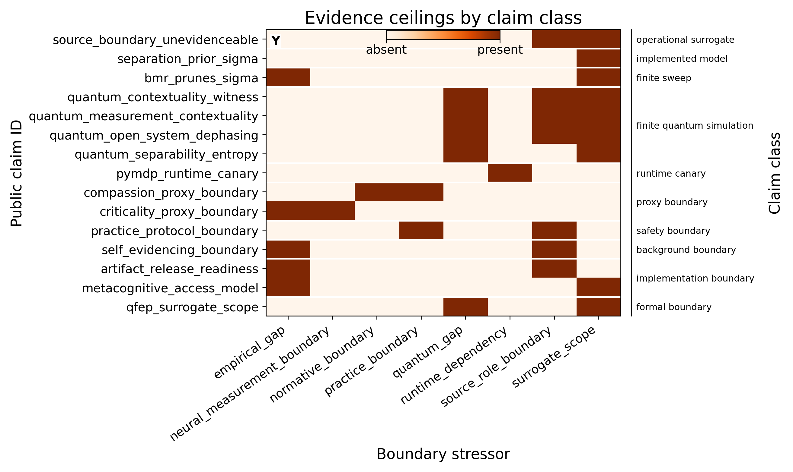
Every figure in the manuscript is generated from JSON or CSV
artifacts under output/data/ or
output/reports/. The source map records figure IDs, paths,
captions, alt text, visual encodings, source artifacts, render
contracts, and renderer-level layout telemetry for text overlaps, title
collisions, cropped free-positioned text, and legend/axis collisions.
The visual-caption audit checks source-map caption length, source
artifacts, boundary phrases, and legend/colorbar explanations; the
rendered-caption audit checks the actual composed manuscript captions
that readers see in the PDF; the accessibility audit checks alt text,
source-data alternatives, non-color encodings, and axis or unit
language; the integrity and legibility audits record hashes, dimensions,
nonblank pixel variance, readable text contracts, and layout failures.
Validation recomputes those fields from disk before accepting the
artifact set, so replacing a PNG or creating an unreadable layout
without regenerating the audit fails.
The visual surface includes a cover graphical abstract, the three ordered QRF lead figures for boundary geometry, b0-b5 relabeling, and invariance/policy flow, finite quantum and stochastic simulation panels, BMR decomposition and pruning maps, active-inference traces, scholarship and claim-governance matrices, and supplemental-only audit visuals. Captions are treated as claim-boundary metadata: simulated figures must say what they simulate, what the colors or legends encode, and which empirical or physical claims remain outside the figure. Supplementary prose lists source-map and validation contracts rather than reprinting numbered main-text figures.
The scholarship and claim-governance visuals audit support and presentation rather than adding model behavior. The scholarship matrix records source-role coverage by track; the claim-support matrix lists which public claim IDs have scoped citation support; the claim-source-validation graph links claims to source roles and validation gates; and the semantic palette ledger freezes color and hatch meanings across figures. These panels make the manuscript easier to audit, but they are not evidence for no-self, practice efficacy, neural criticality, or physical qFEP realization.
The pymdp runtime dashboard is supplemental for the same
reason: it audits whether the active-inference surface is reproducible,
normalized, and recomputable from saved arrays. Its panels summarize
model normalization, posterior and expected-free-energy residuals,
deterministic replay, runtime dependency diagnostics, and selected
stochastic/null contrasts; they are validation checks for the software
interface, not additional model-behavior evidence and not empirical
data.
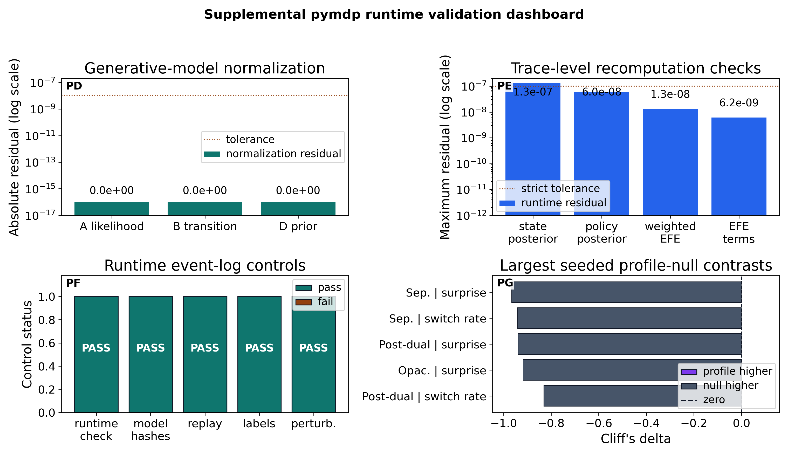
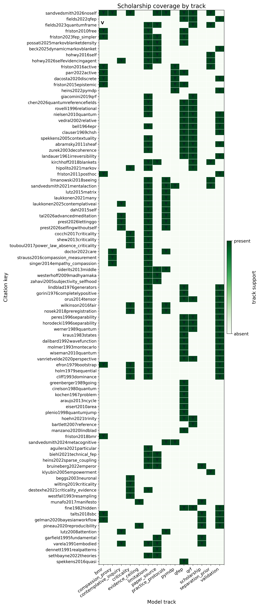
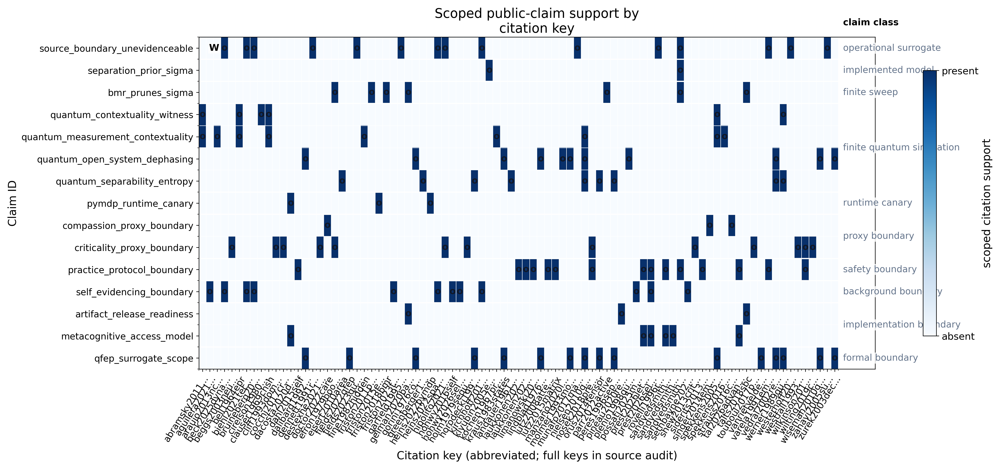
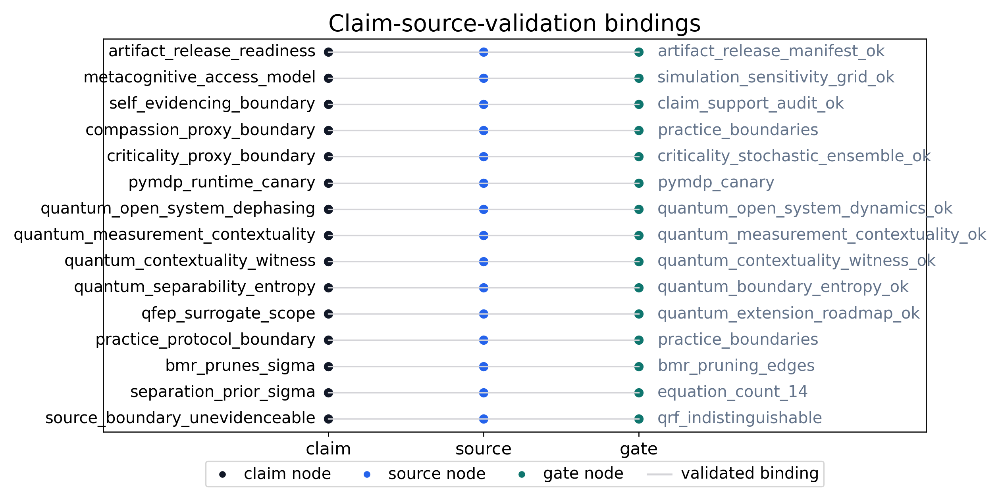
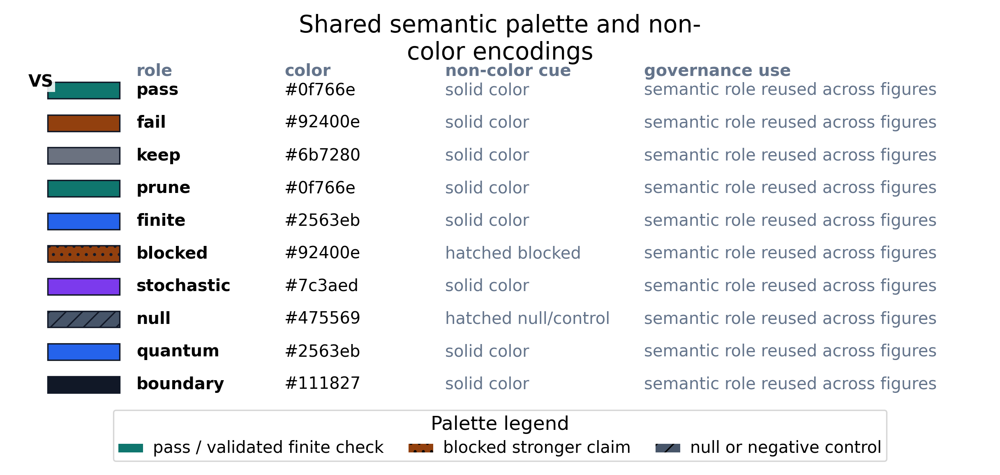
The method assumption/failure map gives the same treatment to the method engines themselves. Rows are method engines; columns record hard constraints, modeling choices, assumptions, evidence ceilings, and falsification controls. The matrix makes soft assumptions visible at the same level as successful checks, which is the FirstPrinciples point of the project: a method is not stronger because its figure is beautiful; it is stronger when its assumptions, failure modes, and forbidden inferences are inspectable.
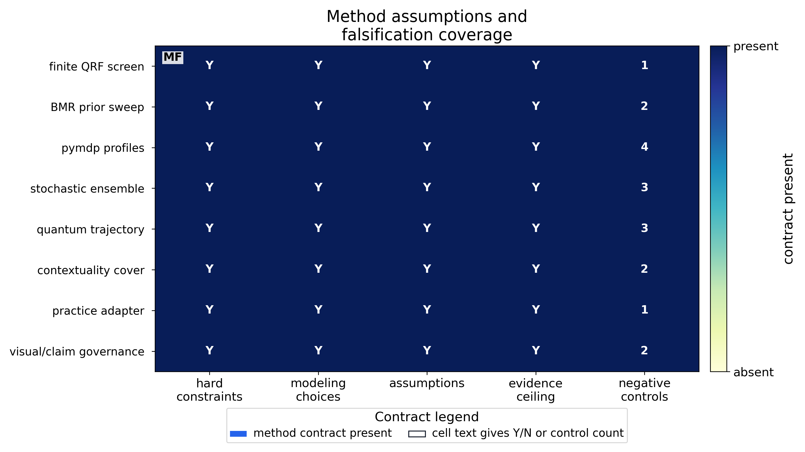
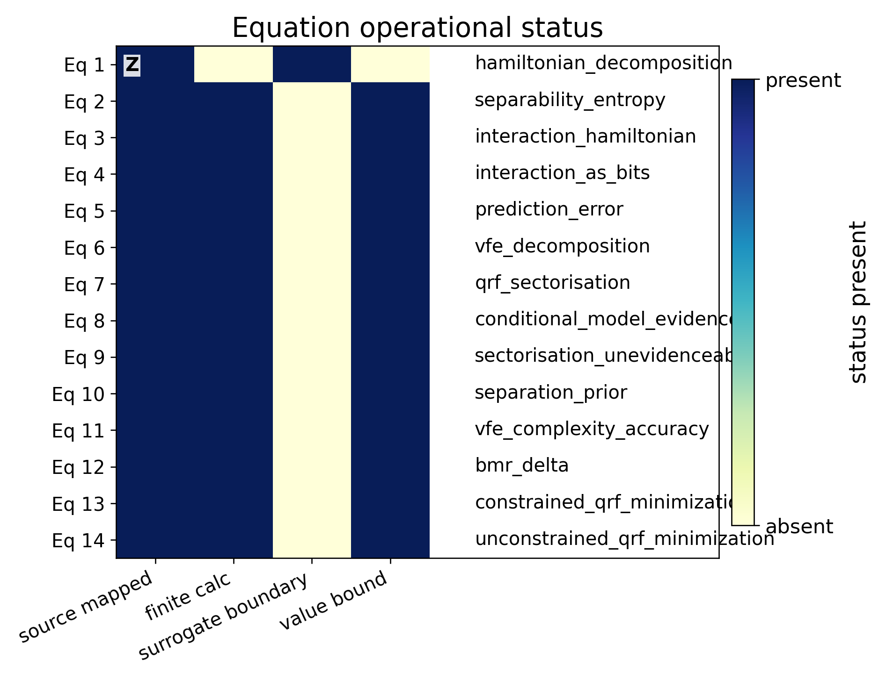
The local release and review-response artifacts are recorded here because they are reproducibility metadata, not new scientific results. The artifact release manifest hashes manifest-listed outputs and rerun files so stale files are visible. The external review-response audit records implemented local deltas and keeps the public-reproduction item blocked until an external archive, DOI, or independent reproduction exists. The figure parameter ledger gives every figure a traceable source row. The QRF label-ablation audit checks that neutral channel renaming does not create semantic dependence. The independent quantum cross-check repeats CHSH and local-polytope controls. The BMR alternative-prior audit records comparator-family verdicts [pineau2020reproducibility; talts2018sbc; gelman2020bayesianworkflow].
These records support reproducible local inspection only. They do not certify a public release, a community reproduction, human-subject validation, clinical safety, contemplative efficacy, neural measurement, or physical qFEP dynamics.
The limits are part of the same release record. The supplemental gates improve reproducibility and adversarial clarity, not evidential scope. They do not:
They define the current software boundary within which future visualization, empirical adapters, and practice-interface work can be developed without laundering unsupported claims.